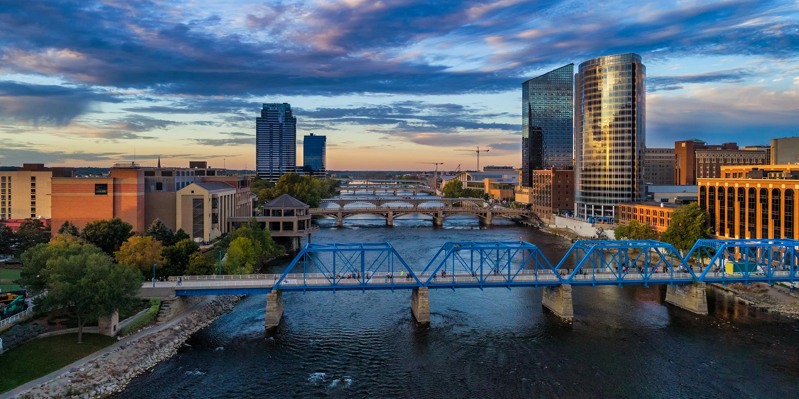
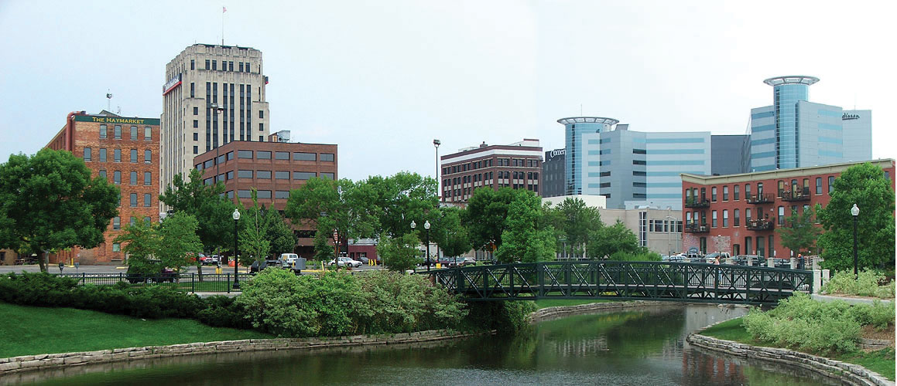
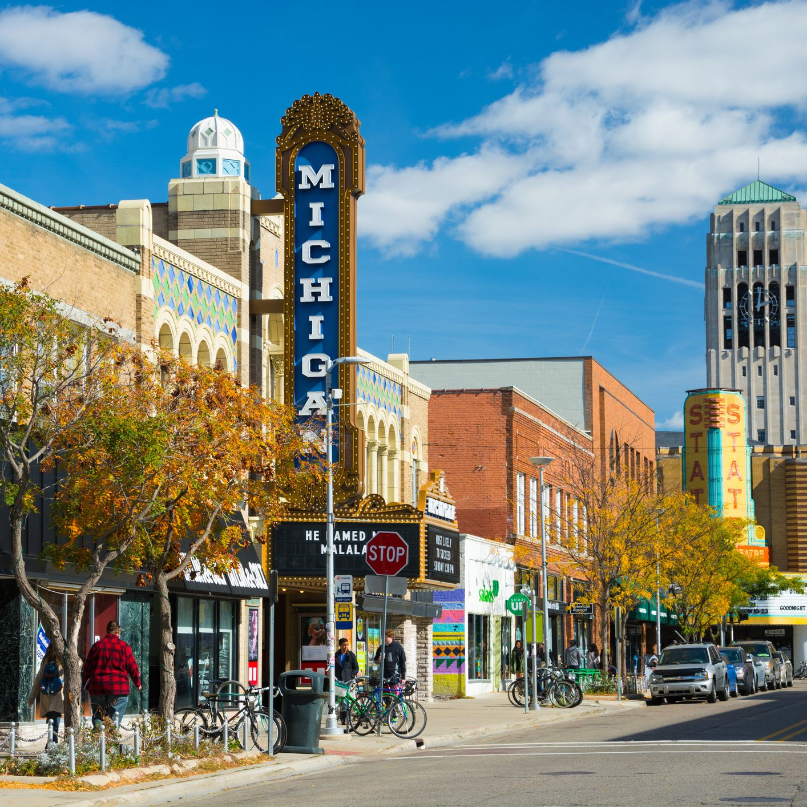
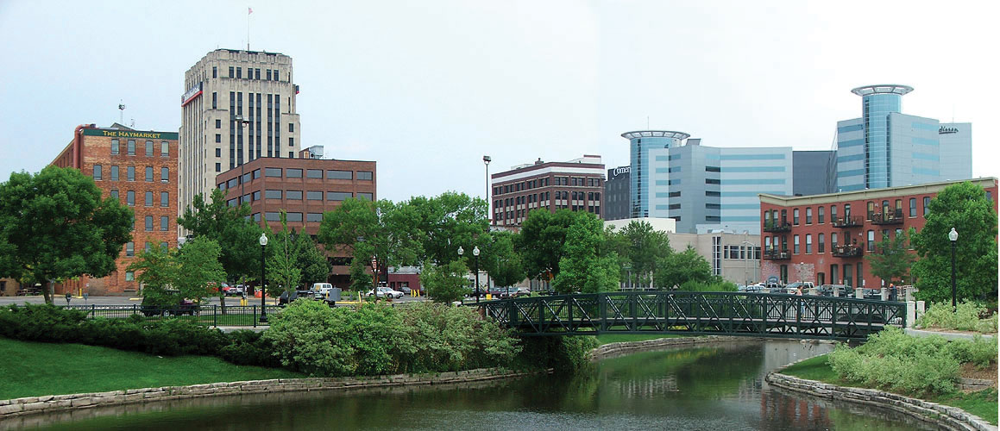
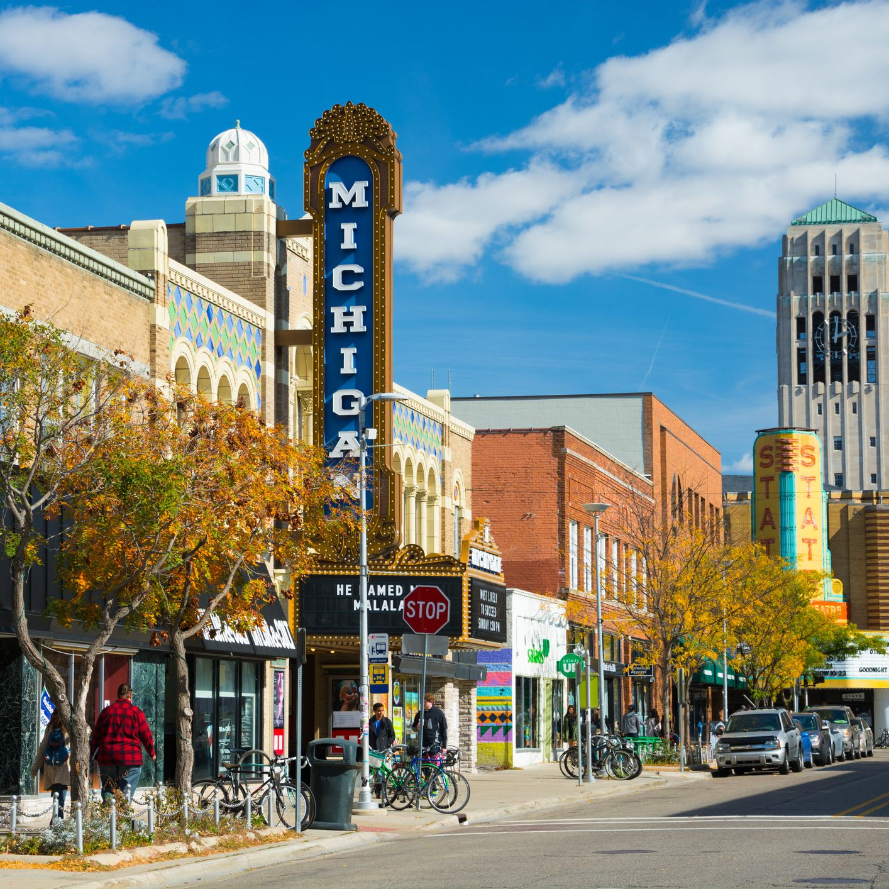
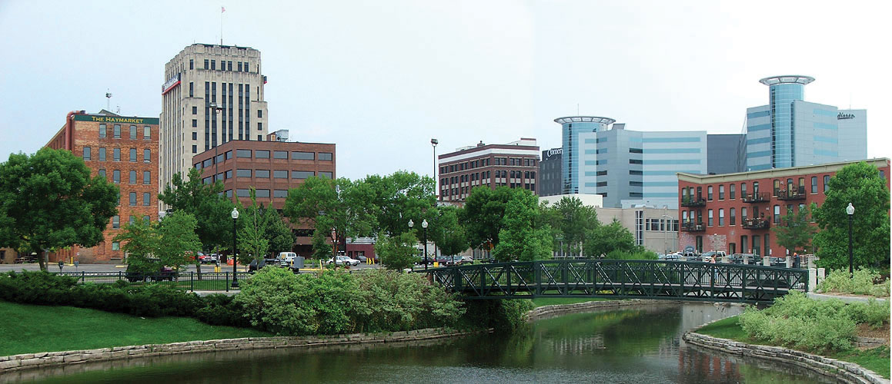
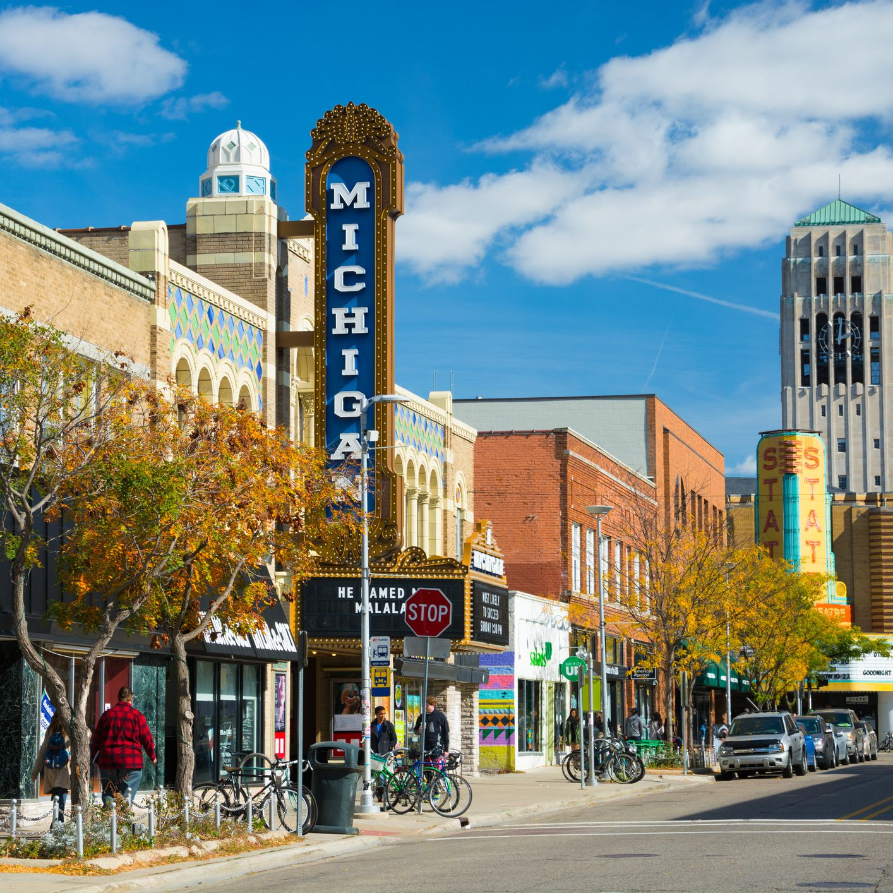
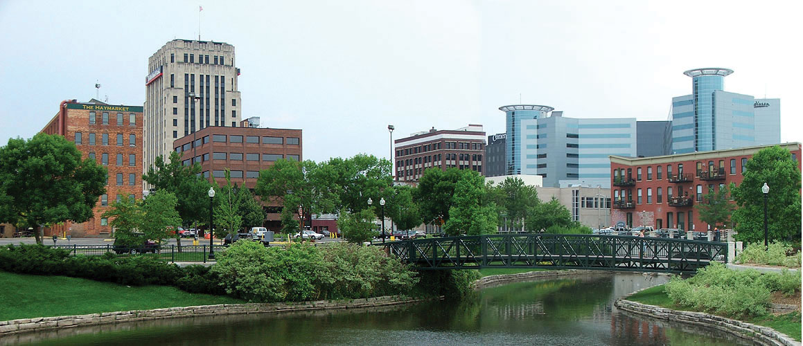
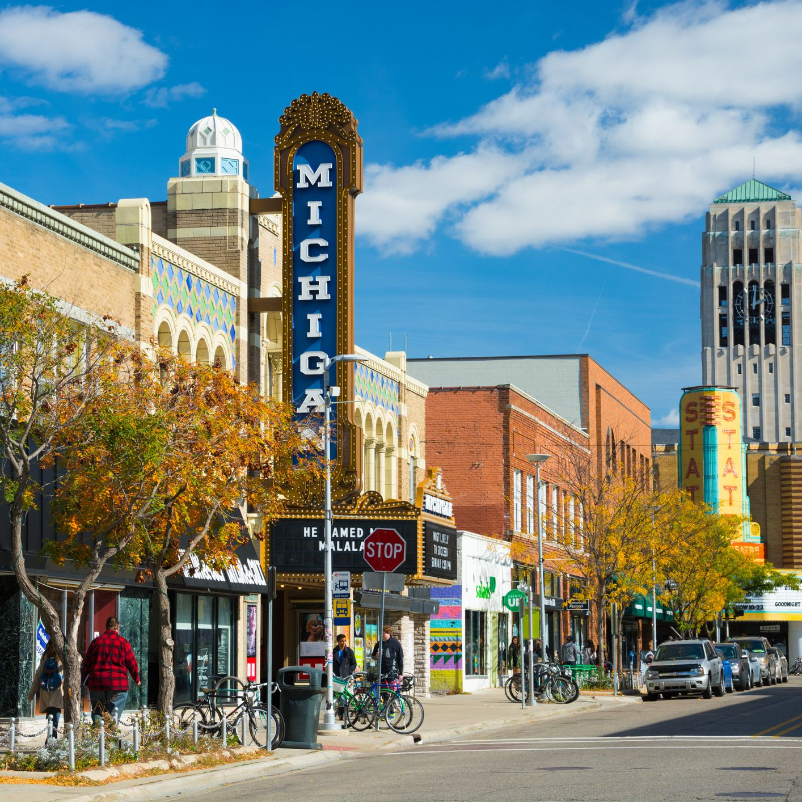

Gallery

 






Michigan is quite unique among the states in that it is divided into two distint geographic sections, the Upper peninsula, and the Lower peninsula. The Upper and Lower Peninsulas were connected in 1957 with the construction of Big Mac, the Mackinac Bridge. With 3,177 miles of Great Lakes shoreline it is easy to see why Michigan boasts a thriving recreational industry, and leads the nation with approximately one million registered pleasure boats.
Visit Us To know More

